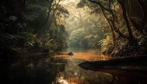

Latest News
Scientists Discover New Species of Orchid in the Amazon Rainforest In a groundbreaking discovery, researchers have uncovered a new species of orchid flourishing in the heart of the Amazon rainforest. Named "Amazonia Radiant," this orchid species captivates with its vibrant hues and intricate petal patterns, marking a significant addition to the rich biodiversity of the region. Dr. Elena Santos, lead botanist of the expedition, describes the finding as a testament to the Amazon's unparalleled ecological diversity. "The Amazon rainforest continues to reveal its secrets, underscoring the urgent need for its preservation," she states. The discovery underscores the importance of conservation efforts to safeguard these delicate ecosystems amidst mounting environmental challenges. The "Amazonia Radiant" orchid's discovery serves as a reminder of the countless undiscovered species awaiting exploration in Earth's remaining wilderness areas. Scientists emphasize the critical role of conservation initiatives and sustainable practices in protecting these invaluable natural treasures for future generations.
